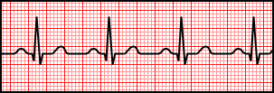
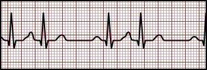
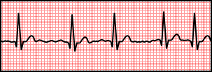
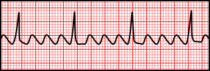
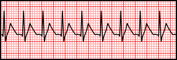

從這一章開始進入心律不整的世界。先從發生在心房、房室結周邊的「心房性（supraventricular）」心律不整開始：竇性心律不整、心房早期收縮、心房顫動、心房撲動、SVT。
後面每一種心律不整，都是拿「正常竇性心律」當作對照組去比較哪裡不一樣，所以先看一次基準線：





節律仍由 SA node 主導，只是速率或規律性有變化：
心房內某個非SA node的位置提早放電，產生一個形狀跟正常P波不同、且提早出現的P波，後面通常接著正常形狀的QRS（因為訊號進入房室結之後走的還是正常路徑）。通常良性，健康人身上也很常見，跟咖啡因、壓力、睡眠不足有關；但頻繁出現時也可能是心房顫動的前兆訊號。
心房內出現大量混亂、不同步的微小電氣迴路（reentry），導致心房完全無法有效收縮，只能「顫動」。心電圖上：
心房顫動時心房無法有效收縮，血液容易在心房（尤其左心耳）淤積形成血栓，血栓一旦脫落隨血流跑到腦部就會造成中風。這是AFib病人臨床上要積極評估中風風險、考慮抗凝血治療的重要原因，也是護理人員看到AFib病人要提高警覺的原因之一。
心房內是單一、規則、快速的環形電氣迴路（不是AFib那種混亂多迴路），心房速率通常在 250-350次/分，心電圖上呈現特徵性的規則鋸齒狀「撲動波」（flutter waves），沒有平坦的等電位基線。因為房室結有其不反應期保護，通常不會每個撲動波都下傳，常見 2:1、3:1、4:1 等固定比例傳導，因此心室的QRS間距往往反而是規則的（除非傳導比例不固定）。
AFib 與 AFlutter 最容易混的地方：AFib的QRS間距是「不規則」的，AFlutter在固定傳導比例下QRS間距通常是「規則」的。判斷關鍵不是看QRS規不規則，而是看基線——AFib是雜亂細碎的顫動，AFlutter是工整的鋸齒狀撲動波。
最常見的機轉是房室結內部形成一個小型折返迴路（AV nodal reentrant tachycardia, AVNRT），訊號在這個迴路裡快速打轉，造成窄QRS、規則、速率快（常見150-220次/分）的頻脈，通常突然開始、突然結束，P波常因為跟QRS幾乎同時發生而埋在QRS或緊接其後的T波中，不易辨識。
| English | 中文 | 關鍵特徵 |
|---|---|---|
| Premature atrial contraction (PAC) | 心房早期收縮 | 提早出現、P波形狀不同、QRS正常 |
| Atrial fibrillation (AFib) | 心房顫動 | 無清楚P波、QRS間距不規則地不規則 |
| Atrial flutter (AFlutter) | 心房撲動 | 規則鋸齒狀撲動波、QRS常規則（固定比例傳導） |
| Supraventricular tachycardia (SVT) | 室上頻脈 | 窄QRS、規則、快速、突發突止 |